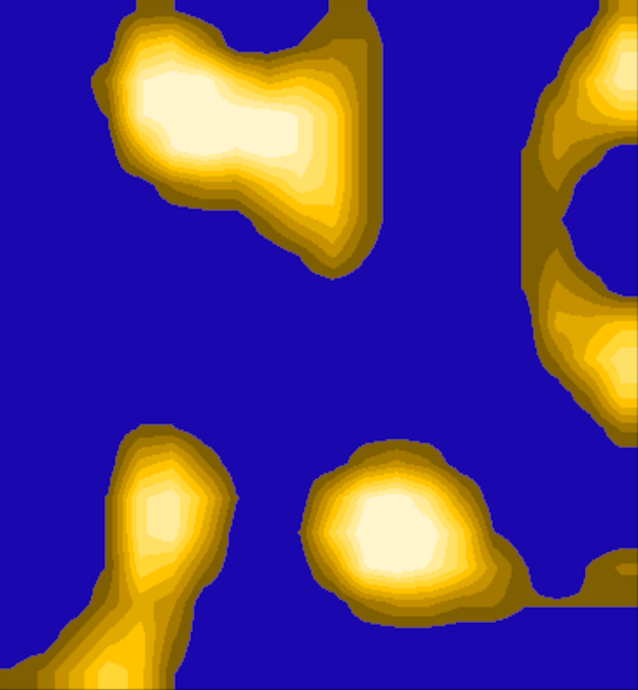
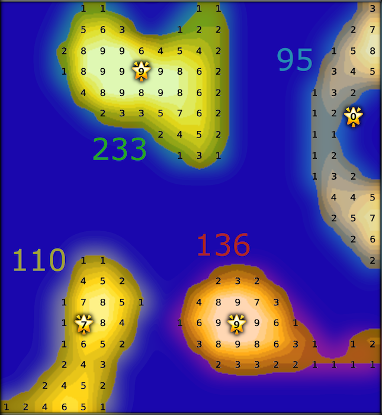
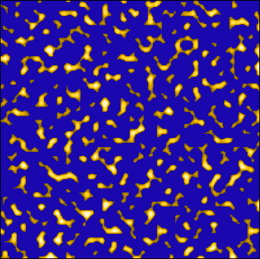

It's a new day on the STS Space Ghost, and today you're headed to the galley. That's perfect, because you could use a snack…
You meet the ship's head chef, who is deep in thought about the menu. Just as you're about to mention that you could really go for a cheeseburger, he begins speaking to you, explaining what's on his mind.
It turns out, the only food that the crew eats aboard the ship is Galactic Algae Blooms; a thought which slightly turns your stomach, but you hide your disgust well.
There are five species of Galactic Algae Blooms: Sweet, Bitter, Umami, Salty, and Sour. The depth of flavor of each of these species varies from bloom to bloom, each having its own scores for both flavor complexity, persistence of taste, and intensity. A skilled chef can take these individual flavor profiles and create dishes that resemble many non-algae-based dishes the crew are familiar with from home.
The process is as follows:
If the algae you gather from three species of Galactic Algae Blooms is
6(71,74) 6(70,73) 3(68,76)
12(74,65) 8(73,63) 4(70,69)
8(75,80) 4(72,71) 18(69,77)
To get the Center of Mass at X for the first species, you would put the numbers
into the equation:
for the numerator
(6*71) + (6*70) + (3*68) = 1050
and the denominator
6 + 6 + 3 = 15 giving you
1050/15
70 for the X value.
To get the Center of Mass at Y for the first species, you would put the numbers
into the equation:
for the numerator
(6*74) + (6*73) + (3*76) = 1110.
The denominator remains the same as for X,
15 giving you
1110/15
74 for the Y value.
Performing the same operations on all three species, we get X and Y values: (70, 74), (73, 65), and (71, 77)
Converting these numbers to ASCII values, you get: (F, J), (I, A), and (G, M)
Finally, concatenating all of the X values and Y values with a space between them, you get: FIG JAM
Here is your selected Galactic Algae Blooms:
Now that you have a recipe in mind, it's time to gather the Galactic Algae Blooms from deep space. You do this using a deep space net. The chef shows you the control panel for the net, a big screen displaying glowing blobs in a gradient of color. These blobs, you are told, represent clusters of Galactic Algae Blooms. Pressing the toggle button will alternate between displaying the algae cluster blobs and a grid of numbers, your puzzle input, representing how many algae are at each point.
The cost of casting this deep space net is very high, so you are informed you can only cast once per day. Fortunately, the algae blooms migrate around each cluster's center of mass, so casting the net directly into that location will collect every algae bloom from that cluster. Since the STS Space Ghost has a large crew, you should aim to collect as many algae blooms as possible.
In your previous equations for the Center of Mass, you had only 3 points to consider, but these clusters of algae blooms are much more numerous. Unfortunately, the previous equation will not work, but you notice that you can perform the summations in the numerator and the denominator of the equations with any number of points. You can use these new equations.
Type the X and Y coordinates, separated by a comma, into the machine to cast the net to the cluster with the greatest total mass.
This blob
gives you the following number grid
0,0,0,0,1,1,0,0,0,0,1,1,0,0,0,0,0,0,0,3You can see the clusters' values easier by ignoring the 0s
, , , ,1,1, , , , ,1,1, , , , , , , ,3Looking at the C-shaped cluster on the right, you can calculate the total mass by adding all of the individual masses in the cluster. 3+2+7+1+5+8+3+4+5+1+3+2+1+2+1+1+1+2+1+3+2+4+4+5+2+5+7+2+6+2 = 95
Then for the numerator of the Center of Mass equation for X, you can
multiply every mass by its X position (m*x)
and sum the results.
(3*19)+(2*18)+(7*19)+(1*17)+(5*18)+(8*19)+(3*17)+(4*18)+(5*19)+(1*16)+(3*17)+(2*18)+(1*16)+(2*17)+(1*16)+(1*17)+(1*16)+(2*17)+(1*16)+(3*17)+(2*18)+(4*17)+(4*18)+(5*19)+(2*17)+(5*18)+(7*19)+(2*18)+(6*19)+(2*19)
= 1722
Since you are looking for an integer position on the grid, you can use
integer division to get the Center of Mass' position at X. You take the
numerator you just calculated, and divide it by the total mass in the
denominator.
1722 // 95 = 18
You do the same for the Y positions (m*x) for
the Center of Mass equation for Y.
(3*0)+(2*1)+(7*1)+(1*2)+(5*2)+(8*2)+(3*3)+(4*3)+(5*3)+(1*4)+(3*4)+(2*4)+(1*5)+(2*5)+(1*6)+(1*6)+(1*7)+(2*7)+(1*8)+(3*8)+(2*8)+(4*9)+(4*9)+(5*9)+(2*10)+(5*10)+(7*10)+(2*11)+(6*11)+(2*12)
= 562
562 // 95 = 5, so the Center of Mass for
that cluster is at
position (18,5) with a total mass of 95.
Doing the same for all clusters, we get
CoM (7,3) total mass: 233,Shown on the diagram with stars for each Center of Mass:
You can see that 233 is the cluster with the greatest mass, so you would input 7,3 into the coordinates for the deep space net.
The deep space net's control panel displays your actual clusters:

You press the toggle button and get the following number grid:
{kind=link}
{kind=link}
{kind=link}